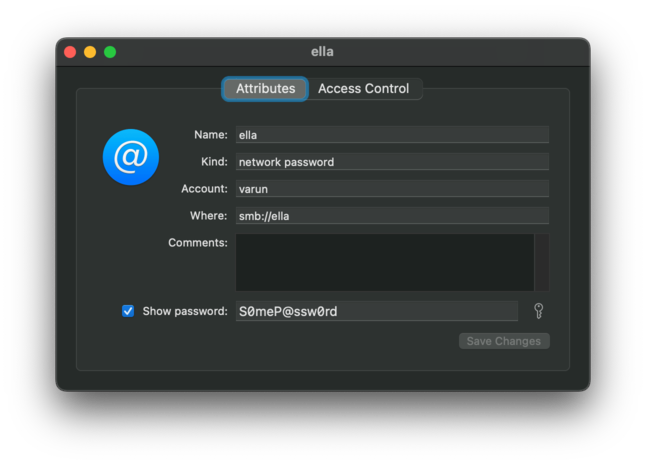

When building valet I needed to provide the password for my account on the SMB share hosted on my NAS. I did not want to input it every-time I run valet, but neither did I want to bake it in either the source code or in any build-time variable as then I have to recompile from source every time my password changes.
Since I already had it stored in my laptop's Keychain Access as it is used when I want to mount the share using Finder, I decided to try and read from there. All the online places mention how to retrieve either a record for a website account or retrieve a generic account. But none mentions an SMB share specifically.
Here's a sample entry stored in Keychain Access for an SMB share:
Accessing from shell/terminal
And here's the way to retrieve the password from terminal:
security find-internet-password -a "varun" -s "ella" -g -w "/Users/varun/Library/Keychains/login.keychain-db"Here's what each option means:
-a: Corresponds to the username-s: Corresponds to the server. In case of SMB share we don't have to enter the full-path (smb://ella) but only its name-g: Display the password for the item found-w: Display only the password and not the whole record
Accessing from Rust
There is a nice crate in rust called security-framework which handles things for us. Here's a snippet of how to get the password in a string in rust:
fn get_network_share_password() -> std::io::Result<String> {
let keychain = SecKeychain::open("/Users/varun/Library/Keychains/login.keychain-db").unwrap();
let (password, _) = find_internet_password(
Some(&[keychain]),
"ella",
None,
"varun",
"",
None,
SecProtocolType::SMB,
SecAuthenticationType::Any,
)
.unwrap();
return Ok(String::from_utf8(password.to_vec()).unwrap());
}Articles related to project valet
- Project valet announcement
- Read SMB share password from MacOS Keychain (this article)
- Rust read build-time environment variables at run-time